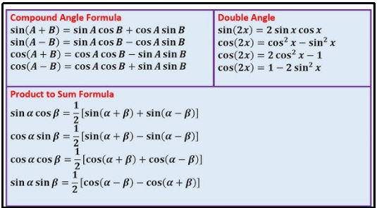
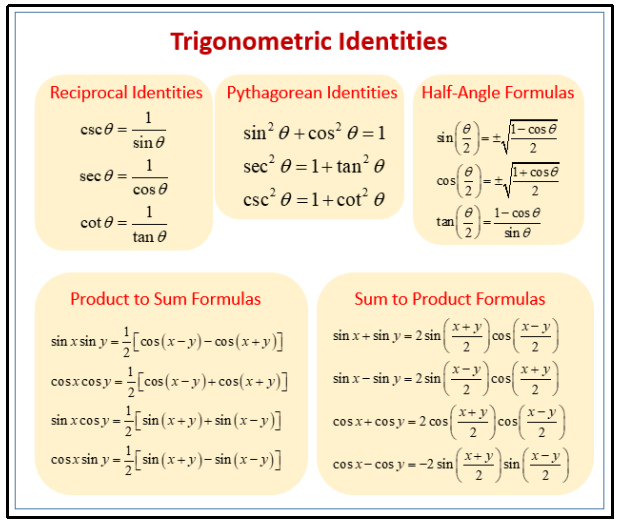

Trigonometric Equations & Identities
1.2 Trigonometric Equations & Identities
- Trigonometric identities are equations involving trigonometric functions that are true for all values of the variable where both sides of the equation are defined. These are useful for simplifying expressions, solving equations, and proving formulas.
- Identities hold true for all values of the variables.
- Valid for right-angled triangles unless otherwise stated.
- Based on the six trig ratios: sin, cos, tan, cosec, sec, cot.
1. Trigonometric Formula

2. Trigonometric Identities
